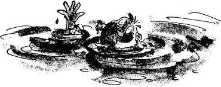
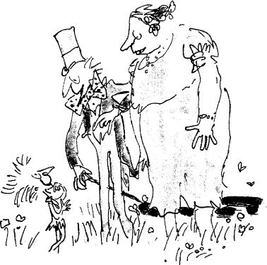

When Mr Wonka turned round and saw what Augustus Gloop was doing, he cried out, ‘Oh, no! Please, Augustus, please! I beg of you not to do that. My chocolate must be untouched by human hands!’
‘Augustus!’ called out Mrs Gloop. ‘Didn’t you hear what the man said? Come away from that river at once!’
‘This stuff is fabulous!’ said Augustus, taking not the slightest notice of his mother or Mr Wonka. ‘Gosh, I need a bucket to drink it properly!’
‘Augustus,’ cried Mr Wonka, hopping up and down and waggling his stick in the air, ‘you must come away. You are dirtying my chocolate!’
‘Augustus!’ cried Mrs Gloop.
‘Augustus!’ cried Mr Gloop.
But Augustus was deaf to everything except the call of his enormous stomach. He was now lying full length on the ground with his head far out over the river, lapping up the chocolate like a dog.
‘Augustus!’ shouted Mrs Gloop. ‘You’ll be giving that nasty cold of yours to about a million people all over the country!’
‘Be careful, Augustus!’ shouted Mr Gloop. ‘You’re leaning too far out!’
Mr Gloop was absolutely right. For suddenly there was a shriek, and then a splash, and into the river went Augustus Gloop, and in one second he had disappeared under the brown surface.
‘Save him!’ screamed Mrs Gloop, going white in the face, and waving her umbrella about. ‘He’ll drown! He can’t swim a yard! Save him! Save him!’
‘Good heavens, woman,’ said Mr Gloop, ‘I’m not diving in there! I’ve got my best suit on!’
Augustus Gloop’s face came up again to the surface, painted brown with chocolate. ‘Help! Help! Help!’ he yelled. ‘Fish me out!’
‘Don’t just stand there!’ Mrs Gloop screamed at Mr Gloop. ‘Do something!’
‘I am doing something!’ said Mr Gloop, who was now taking off his jacket and getting ready to dive into the chocolate. But while he was doing this, the wretched boy was being sucked closer and closer towards the mouth of one of the great pipes that was dangling down into the river. Then all at once, the powerful suction took hold of him completely, and he was pulled under the surface and then into the mouth of the pipe.
The crowd on the riverbank waited breathlessly to see where he would come out.
‘There he goes!’ somebody shouted, pointing upwards.
And sure enough, because the pipe was made of glass, Augustus Gloop could be clearly seen shooting up inside it, head first, like a torpedo.
‘Help! Murder! Police!’ screamed Mrs Gloop. ‘Augustus, come back at once! Where are you going?’
‘It’s a wonder to me,’ said Mr Gloop, ‘how that pipe is big enough for him to go through it.’
‘It isn’t big enough!’ said Charlie Bucket. ‘Oh dear, look! He’s slowing down!’
‘So he is!’ said Grandpa Joe.
‘He’s going to stick!’ said Charlie.
‘I think he is!’ said Grandpa Joe.
‘By golly, he has stuck!’ said Charlie.
‘It’s his stomach that’s done it!’ said Mr Gloop.
‘He’s blocked the whole pipe!’ said Grandpa Joe.
‘Smash the pipe!’ yelled Mrs Gloop, still waving her umbrella. ‘Augustus, come out of there at once!’
The watchers below could see the chocolate swishing around the boy in the pipe, and they could see it building up behind him in a solid mass, pushing against the blockage. The pressure was terrific. Something had to give. Something did give, and that something was Augustus. WHOOF! Up he shot again like a bullet in the barrel of a gun.
‘He’s disappeared!’ yelled Mrs Gloop. ‘Where does that pipe go to? Quick! Call the fire brigade!’
‘Keep calm!’ cried Mr Wonka. ‘Keep calm, my dear lady, keep calm. There is no danger! No danger whatsoever! Augustus has gone on a little journey, that’s all. A most interesting little journey. But he’ll come out of it just fine, you wait and see.’
‘How can he possibly come out just fine!’ snapped Mrs Gloop. ‘He’ll be made into marshmallows in five seconds!’
‘Impossible!’ cried Mr Wonka. ‘Unthinkable! Inconceivable! Absurd! He could never be made into marshmallows!’
‘And why not, may I ask?’ shouted Mrs Gloop.
‘Because that pipe doesn’t go anywhere near it! That pipe – the one Augustus went up happens to lead directly to the room where I make a most delicious kind of strawberry-flavoured chocolate-coated fudge…’
‘Then he’ll be made into strawberry-flavoured chocolate-coated fudge!’ screamed Mrs Gloop. ‘My poor Augustus! They’ll be selling him by the pound all over the country tomorrow morning!’
‘Quite right,’ said Mr Gloop.
‘I know I’m right,’ said Mrs Gloop.
‘It’s beyond a joke,’ said Mr Gloop.
‘Mr Wonka doesn’t seem to think so!’ cried Mrs Gloop. ‘Just look at him! He’s laughing his head off! How dare you laugh like that when my boy’s just gone up the pipe! You monster!’ she shrieked, pointing her umbrella at Mr Wonka as though she were going to run him through. ‘You think it’s a joke, do you? You think that sucking my boy up into your Fudge Room like that is just one great big colossal joke?’
‘He’ll be perfectly safe,’ said Mr Wonka, giggling slightly.
‘He’ll be chocolate fudge!’ shrieked Mrs Gloop.
‘Never!’ cried Mr Wonka.
‘Of course he will!’ shrieked Mrs Gloop.
‘I wouldn’t allow it!’ cried Mr Wonka.
‘And why not?’ shrieked Mrs Gloop.
‘Because the taste would be terrible,’ said Mr Wonka. ‘Just imagine it! Augustus-flavoured chocolate-coated Gloop! No one would buy it.’
‘They most certainly would!’ cried Mr Gloop indignantly.
‘I don’t want to think about it!’ shrieked Mrs Gloop.
‘Nor do I,’ said Mr Wonka. ‘And I do promise you, madam, that your darling boy is perfectly safe.’
‘If he’s perfectly safe, then where is he?’ snapped Mrs Gloop. ‘Lead me to him this instant!’
Mr Wonka turned around and clicked his fingers sharply, click, click, click, three times. Immediately, an Oompa-Loompa appeared, as if from nowhere, and stood beside him.
The Oompa-Loompa bowed and smiled, showing beautiful white teeth. His skin was rosy-white, his long hair was golden-brown, and the top of his head came just above the height of Mr Wonka’s knee. He wore the usual deerskin slung over his shoulder.
‘Now listen to me!’ said Mr Wonka, looking down at the tiny man. ‘I want you to take Mr and Mrs Gloop up to the Fudge Room and help them to find their son, Augustus. He’s just gone up the pipe.’
The Oompa-Loompa took one look at Mrs Gloop and exploded into peals of laughter.
‘Oh, do be quiet!’ said Mr Wonka. ‘Control yourself! Pull yourself together! Mrs Gloop doesn’t think it’s at all funny!’
‘You can say that again!’ said Mrs Gloop.
‘Go straight to the Fudge Room,’ Mr Wonka said to the Oompa-Loompa, ‘and when you get there, take a long stick and start poking around inside the big chocolate-mixing barrel. I’m almost certain you’ll find him in there. But you’d better look sharp! You’ll have to hurry! If you leave him in the chocolate-mixing barrel too long, he’s liable to get poured out into the fudge boiler, and that really would be a disaster, wouldn’t it? My fudge would become quite uneatable!’
Mrs Gloop let out a shriek of fury.
‘I’m joking,’ said Mr Wonka, giggling madly behind his beard. ‘I didn’t mean it. Forgive me. I’m so sorry. Good-bye, Mrs Gloop! And Mr Gloop! Good-bye! I’ll see you later…’
As Mr and Mrs Gloop and their tiny escort hurried away, the five Oompa-Loompas on the far side of the river suddenly began hopping and dancing about and beating wildly upon a number of very small drums. ‘Augustus Gloop!’ they chanted. ‘Augustus Gloop! Augustus Gloop! Augustus Gloop!’
‘Grandpa!’ cried Charlie. ‘Listen to them, Grandpa! What are they doing?’
‘Ssshh!’ whispered Grandpa Joe. ‘I think they’re going to sing us a song!’
‘Augustus Gloop!’ chanted the Oompa-Loompas.
‘Augustus Gloop! Augustus Gloop!
The great big greedy nincompoop!
How long could we allow this beast
To gorge and guzzle, feed and feast
On everything he wanted to?
Great Scott! It simply wouldn’t do!
However long this pig might live,
We’re positive he’d never give
Even the smallest bit of fun
Or happiness to anyone.
So what we do in cases such
As this, we use the gentle touch,
And carefully we take the brat
And turn him into something that
Will give great pleasure to us all –
A doll, for instance, or a ball,
Or marbles or a rocking horse.
But this revolting boy, of course,
Was so unutterably vile,
So greedy, foul, and infantile,
He left a most disgusting taste
Inside our mouths, and so in haste
We chose a thing that, come what may,
Would take the nasty taste away.
“Come on!” we cried. “The time is ripe
To send him shooting up the pipe!
He has to go! It has to be!”
And very soon, he’s going to see
Inside the room to which he’s gone
Some funny things are going on.
But don’t, dear children, be alarmed;
Augustus Gloop will not be harmed,
Although, of course, we must admit
He will be altered quite a bit.
He’ll be quite changed from what he’s been,
When he goes through the fudge machine:
Slowly, the wheels go round and round,
The cogs begin to grind and pound;
A hundred knives go slice, slice, slice;
We add some sugar, cream, and spice;
We boil him for a minute more,
Until we’re absolutely sure
That all the greed and all the gall
Is boiled away for once and all.
Then out he comes! And now! By grace!
A miracle has taken place!
This boy, who only just before
Was loathed by men from shore to shore,
This greedy brute, this louse’s ear,
Is loved by people everywhere!
For who could hate or bear a grudge
Against a luscious bit of fudge?’
‘I told you they loved singing!’ cried Mr Wonka. ‘Aren’t they delightful? Aren’t they charming? But you mustn’t believe a word they said. It’s all nonsense, every bit of it!’
‘Are the Oompa-Loompas really joking, Grandpa?’ asked Charlie.
‘Of course they’re joking,’ answered Grandpa Joe. ‘They must be joking. At least, I hope they’re joking. Don’t you?’